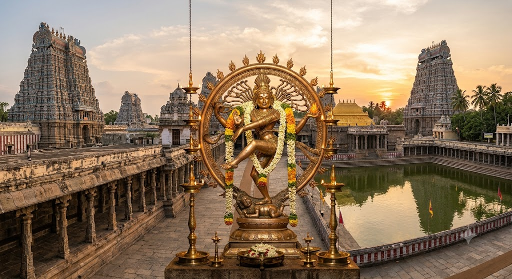

திருமுறைகளின் வழியே
தேவாரம், திருவாசகம் உள்ளிட்ட திருமுறைப் பாடல்களின் பொருளை அறிந்து, அவை உணர்த்தும் சிவநெறியை ஆசிரியரின் வழிகாட்டுதலுடன் கற்போம்.
 Arivom.org
Arivom.org

சிவனருளை நாடி • திருமுறை வழியில்
சிவபெருமானை முழுமுதற் பொருளாகக் கொண்டு, திருமுறைகளின் வழியே சைவ சித்தாந்தத்தையும் உயிரின் இயல்பையும் அறியும் ஆன்மிகக் கற்றல் பயணம். அறிவோம் அனைவருக்குமான இலாப நோக்கற்ற கற்றல் தளம்.
கற்றலில் இணையநான் யார்? ஏன் பிறந்தேன்? பிறவியின் நோக்கம் என்ன? இக்கேள்விகளைச் சிவபெருமானின் அருள் நெறியிலும் சைவ சித்தாந்தத்தின் துணையிலும் ஆராய்வதே நமது கற்றலின் மையம்.
பதி, பசு, பாசம் எனும் அடிப்படைகளை அறிந்து, உயிருக்கும் இறைவனுக்கும் உள்ள தொடர்பை உணர முயல்கிறோம். திருமுறைகளின் பாடல்களையும் பொருளையும் கற்று, பக்தி, அன்பு, தொண்டு ஆகியவற்றை அன்றாட வாழ்வில் வளர்ப்பதே அறிவோம் அமைப்பின் நோக்கம்.
திருவாவடுதுறை ஆதீன அறிஞர்
ஆசிரியர் சிவத்திரு. இள.நெடுமாறன் அவர்களின் வழிகாட்டுதலில், திருமுறைப் பாடல்களின் பொருளையும் சைவ சித்தாந்தக் கருத்துகளையும் கற்போம். சிவபெருமானின் அருள் நெறியையும் பிறவியின் நோக்கத்தையும் அறிய விரும்பும் சிவனடியார்களுக்கான கற்றல் பயணம் இது.
ஆசிரியரின் விரிவான அறிமுகம் விரைவில் சேர்க்கப்படும்.
தேவாரம், திருவாசகம் உள்ளிட்ட திருமுறைப் பாடல்களின் பொருளை அறிந்து, அவை உணர்த்தும் சிவநெறியை ஆசிரியரின் வழிகாட்டுதலுடன் கற்போம்.
பதி, பசு, பாசம், வினை, பிறவி ஆகியவற்றைப் பற்றிச் சிந்தித்து, சைவ சித்தாந்தம் காட்டும் மெய்யுணர்வுப் பாதையை அறிந்து கொள்வோம்.
சிவனடியார்களுடன் இணைந்து கற்று, கலந்துரையாடி, அன்பையும் தொண்டையும் வாழ்வின் நெறியாக வளர்ப்போம்.
ஒலிப்பதிவுகள், YouTube காணொளிகள், நேரலை அட்டவணை மற்றும் நூல்கள் ஒரே இடத்தில். உள்ளடக்கங்கள் தயாரானவுடன் இப்பகுதி புதுப்பிக்கப்படும்.
வகுப்புகளில் பகிரப்படும் திருமுறை விளக்கங்களையும் சைவ சித்தாந்த உரைகளையும் மீண்டும் கேட்க உதவும் பகுதி.
ஒலிப்பதிவுகள் விரைவில்சிவத்திரு. இள.நெடுமாறன் அவர்களின் திருமுறை மற்றும் சைவ சித்தாந்த வகுப்புக் காணொளிகள்.
YouTube சேனலைக் காண (Watch Channel)சிவத்திரு. இள.நெடுமாறன் அவர்களின் நேரலை மற்றும் காணொளிகளைக் காண கீழே பார்வையிடவும்.
ஆசிரியரின் நேரலை வகுப்புகள் மற்றும் ஆன்மிக உரைகளைக் காண அதிகாரப்பூர்வ YouTube சேனலைப் பார்வையிடவும்.
வரவிருக்கும் வகுப்புகள் பற்றிய தகவல்களைப் பெற உங்கள் ஆர்வத்தைத் தெரிவியுங்கள். இது முழுமையான மாணவர் சேர்க்கை அல்ல. மாணவர் பதிவுக்கான வசதி பின்னர் அறிமுகப்படுத்தப்படும். பொதுவான கேள்விகளையும் இங்கே பகிரலாம்.